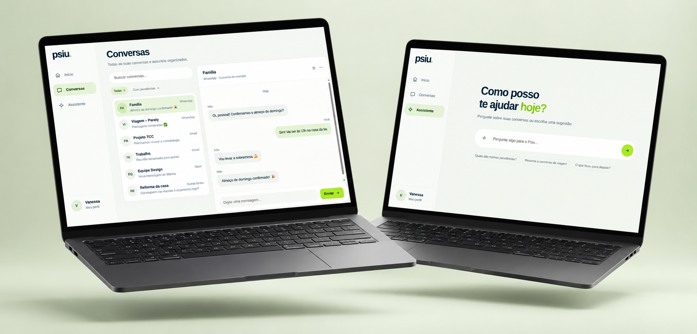

Conversas dispersas.
Uma visão clara.
O Psiu reúne mensagens e pendências para ajudar você a perceber prioridades, recuperar o contexto e decidir o próximo passo.
- Desafio
- Organizar informações e pendências que chegam por canais diferentes.
- Experiência
- Prioridades, conversas e assistência em uma jornada integrada.
- Minha atuação
- Concepção de produto, design de interface e desenvolvimento do protótipo.
Prioridades para
começar bem.
O radar aproxima do centro as conversas que pedem mais atenção. Ao lado, a próxima conversa e as pendências ajudam a decidir por onde começar.
Encontrar contexto sem trocar de lugar.
O protótipo apresenta uma área de conversas e uma proposta de assistente para localizar informações, pedir resumos e apoiar a organização. São demonstrados três ambientes, quatro fontes e seis conversas de exemplo.

Mais contexto, menos esforço.
O Psiu aproxima conversas, prioridades e pendências em uma experiência pensada para ajudar a pessoa a decidir o próximo passo com mais clareza.
Busca, filtros e navegação conectam os assuntos ao seu contexto. O assistente propõe uma forma direta de encontrar informações e retomar conversas em linguagem natural.
Desenvolvido com HTML, CSS e JavaScript, o protótipo explora essas jornadas em telas adaptadas para desktop e celular.
Clareza que acompanha sua rotina.
O radar de prioridades, as conversas e o assistente ganham uma organização adaptada para o celular.